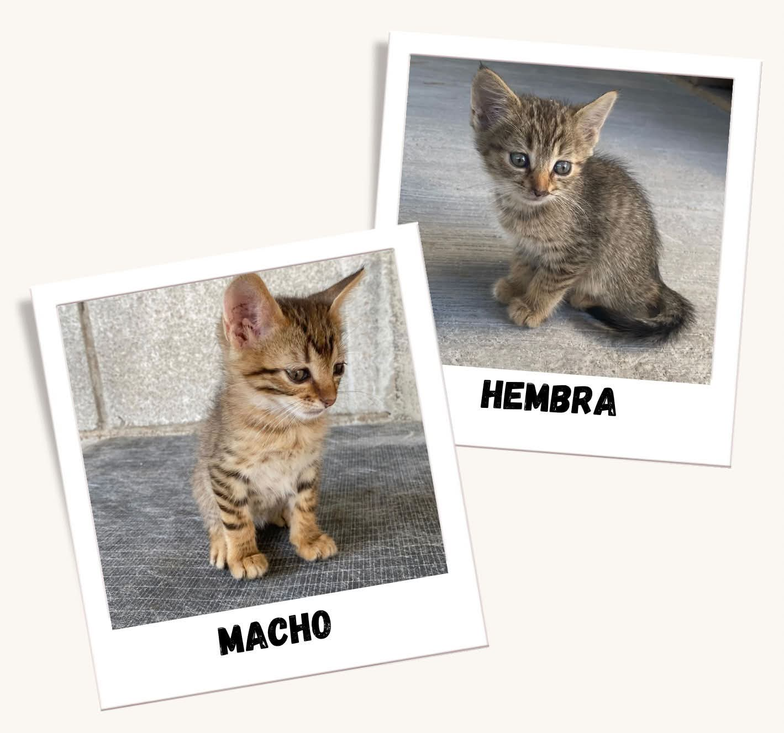
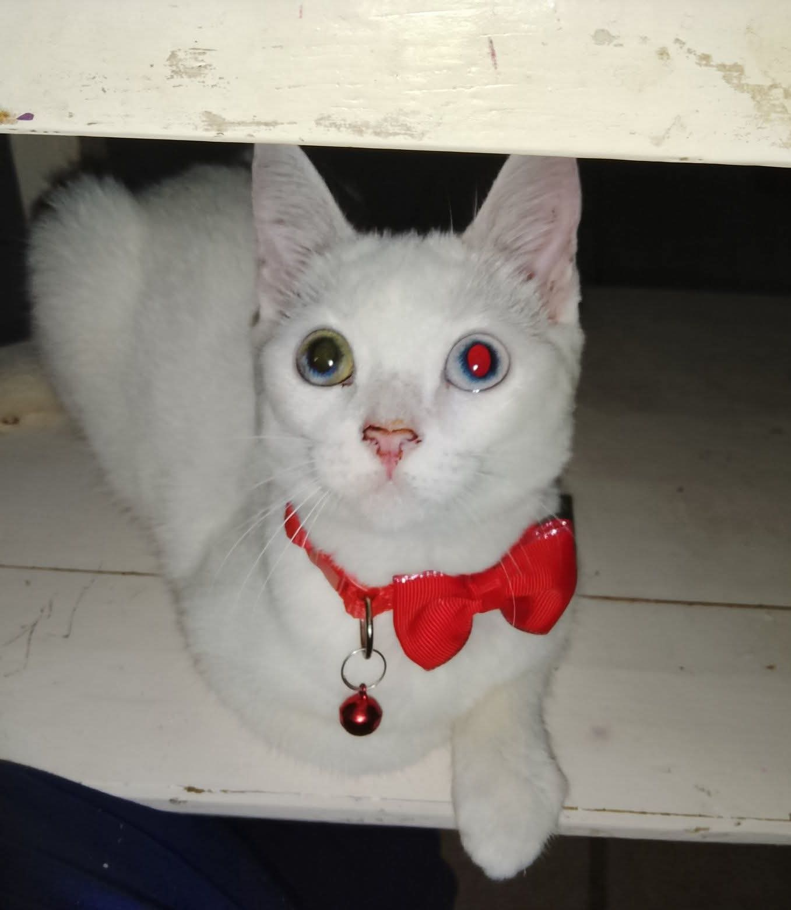

🏡 Adopción Responsable

Nombre: [Desconocido]
Edad: [Desconocida]
Personalidad: Tranquilo
Perrito macho en adopción, lo tienen en resguardo tras ser encontrado solito en la calle.
Contacto: +52 878 700 0012
Conoce a los peludos que buscan un hogar lleno de amor
Nombre: [Desconocido]
Edad: [Desconocida]
Personalidad: Tranquilo
Perrito macho en adopción, lo tienen en resguardo tras ser encontrado solito en la calle.
Contacto: +52 878 700 0012

Nombre: [Desconocido]
Edad: 2 meses
Personalidad: Muy cariñosos
Contacto: 878 153 8212

Nombre: [Desconocido]
Edad: Meses
Raza: Naranja esponjado y Siamés
Personalidad: Muy lindo y cariñoso
El gatito naranja solo está mal peinado, pero es muy lindo, se deja agarrar y cargar.
Contacto: 878 153 8212

Nombre: Duquesa
Edad: 5 meses
Personalidad: Cariñosa y juguetona
Es sorda, tiene heterocromía, hace caso con señas, usa el arenero. Solo come un alimento de Farmacia Guadalajara llamado "FORTI CAT" (es el único que no le da diarrea).
Contacto: 993 256 4086